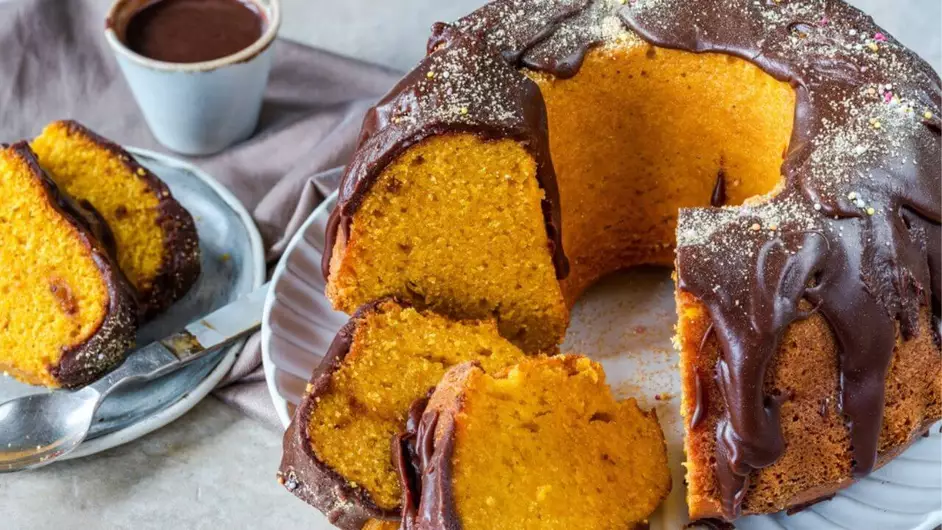
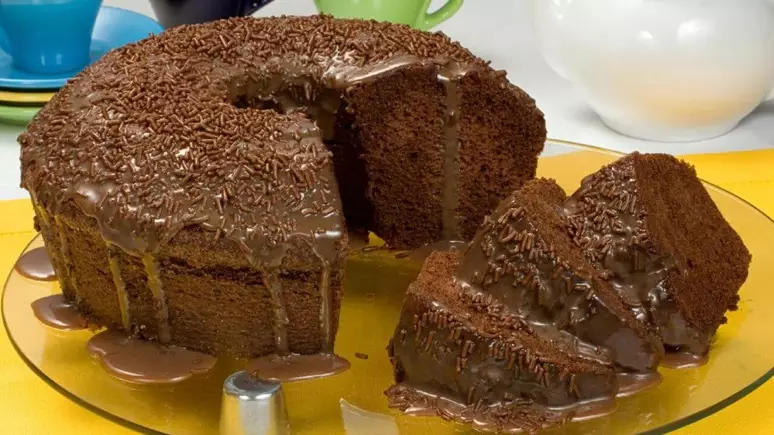
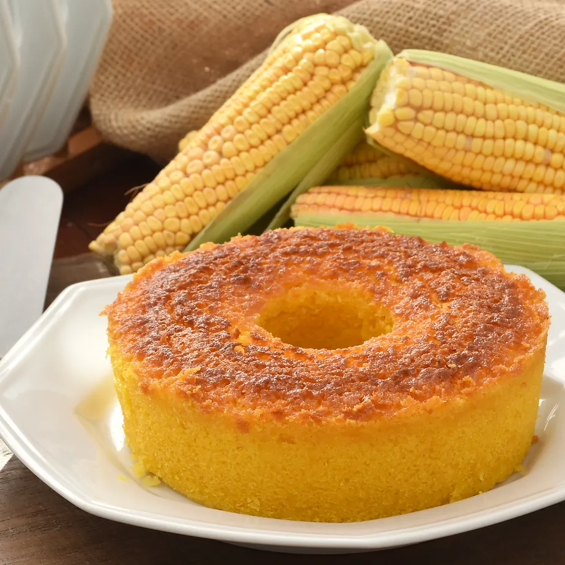
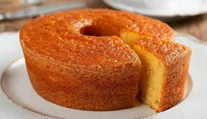
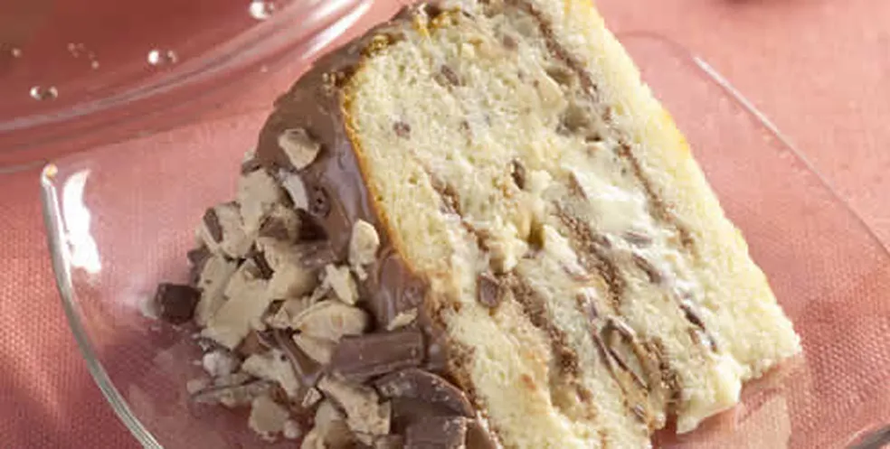
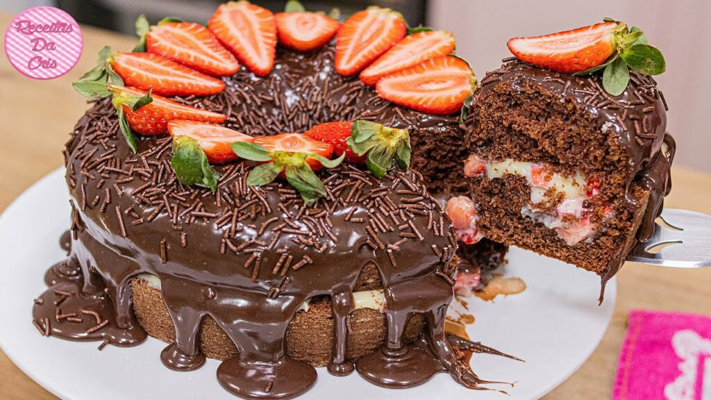
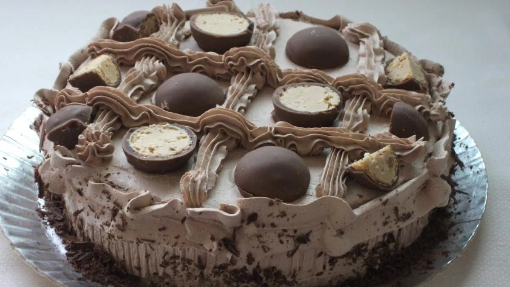
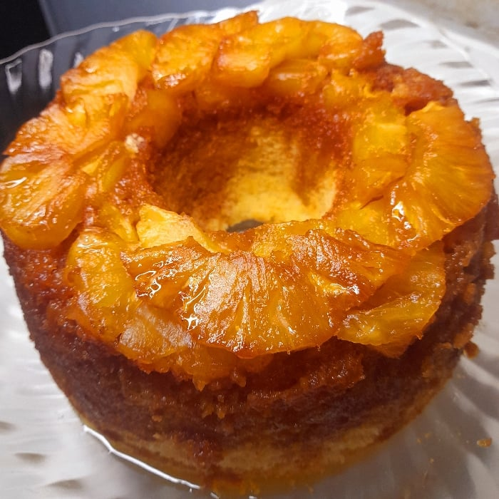
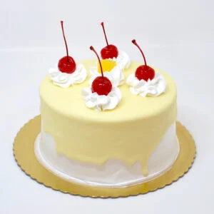

Top 10 Bolos Já feitos da História da Humanidade:
Aqui você vera 10 bolos que os Br amam:
Top 1: Bolo de cenoura com cobertura de chocolate.
Top 2: O Bolo de Chocolate.
Top 3: Bolo de Milho.
Top 4: Bolo de Fubá.
Top 5: Bolo de sonho de valsa.
Top 6: Bolo de Morango com cobertura de Chocolate.
Top 7: Bolo de Serenata do Amor. (Sim Isso Existe :/ )
Top 8: Bolo de Abacaxi
Top 9: Bolo Tradicional

Top 10: Um Bolo nos supermecados (Confeitado)
